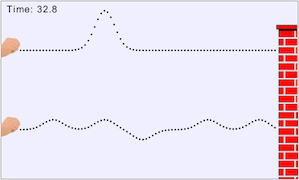

This illustration provides two strings each with multiple pulses traveling down them towards a wall. Each string has a different pulse frequency. Students will explore the effects of "good" versus "bad" timing of pulses and how it influneces the wave pattern.